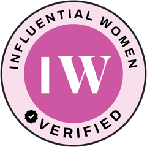

Home / Executive Impact
Executive impact
Impact organized by the value it created
Results across growth, retention, experience and cost — the outcomes leaders care about, with the context behind each one.
Exhibit 1
The impact ledger: outcomes by business theme
Growth & revenue
Commercial results from intelligence-led choices| Outcome | What it represents | Context | Organization |
|---|---|---|---|
| 4× | Certificate deposit campaign conversion; +1,368 wins | Segment-level campaign research and attribution | TDECU |
| $4.53M | Mortgage funding from 215 applications | Linking segment research and attribution to results | TDECU |
| +45% | Online sales in the first quarter of a loyalty program launch (Stage I: free shipping) | Customer research and program launch | Walmart |
| 39% | Year-over-year improvement in customer count and sales | Loyalty and segmentation strategies | Bloomingdale’s |
| ~$50K | Incremental sales | Restaurant Rising and customer recovery work | Sysco |
Retention & loyalty
Relationships protected before they were lost| Outcome | What it represents | Context | Organization |
|---|---|---|---|
| ~1,890 | At-risk members retained in year one | Early-warning retention analytics and targeted outreach | TDECU |
| 35% | Lower customer churn | Listening, customer health and service recovery systems | Sysco |
| +500 bps | NPS improvement, with ~30% loyalty / CLV improvement | Associated enterprise retail and pharmacy initiatives | CVS Health |
| $2.8M+ | Member funds retained | Escheatment intervention during merger integration | TDECU |
Experience & operations
Customer experience managed as a business discipline| Outcome | What it represents | Context | Organization |
|---|---|---|---|
| 85.2% | Branch MSAT year-to-date (Sep 2026) vs. 83% target | Executive service scorecards and ownership | TDECU |
| 14 | Cross-functional service improvements | Member Action Forum and closed-loop governance | TDECU |
| ~10% | Higher BOPIS NPS | Communications and journey research | Walmart |
| 784 stores | Pharmacy Express Pickup; satisfaction up ~5% | Research informing rollout; returns redesign across 202 stores | Walmart |
Cost & efficiency
Analytics that paid for itself| Outcome | What it represents | Context | Organization |
|---|---|---|---|
| $2.4M | Year-over-year savings | Commercial RFP and operations analysis | CEVA Logistics |
| ~$40M | Potential savings identified | Air import/export scenario and opportunity modeling | CEVA Logistics |
| $408K | Labor savings in three months | Labor forecasting and optimization | CEVA Logistics |
| 20% | Cycle time reduction; $34K saved per project per year | Optical-fiber process improvement | BHEL |
Source: executive résumé (2026). Outcomes reflect team and cross-functional initiatives I led or directed; “associated” indicates contribution rather than sole causation.
Board & executive impact
Where my work shaped executive decisions
Growth choices & investment
Informed Board and C-suite conversations on lifecycle segments, geographic whitespace, competitive dynamics, product fit, customer economics and priority acquisition and retention plays.
Enterprise CX accountability
Developed a CX charter, NPS / MSAT and driver scorecards, action-forum governance, accountable owners and RACI — elevating CX from reporting to managed improvement.
Performance & value
Connected predictive churn, marketing ROI, mortgage funding, service experience and merger-transition measurement to executive decisions, business cases and value-at-stake trade-offs.
Recognition
Awards & leadership
CEO’s Award
Transforming enterprise member intelligence and developing an executive decision-support platform.
Voice of Customer Recognition
Launching an enterprise VoC program associated with a 35% YoY churn reduction.
Best Engineer Award
Innovative hydroelectric power plant control-system solution.
Global Citizenship MBA Scholarship
Recognized for leadership and academic excellence.
Fort Bend Leadership Forum — Class of 2027
Participating in a community leadership development program in Fort Bend County.

Influential WomenRecognized: Influential Woman, Retail & Credit Union
Verified recognition, profile and interview in the Influential Women community. View profile →
Career at a glance
Experience and education
| TDECU | Director, Marketing Analytics & Member Insights / Enterprise Strategy | 2025–2026 |
| CVS Health | Director, Customer Insights & Analytics | 2022–2025 |
| Sysco | Senior Manager, Customer Insights & Strategy | 2019–2021 |
| CEVA Logistics | Director, Business Development Strategy & Analytics | Commercial performance, 60 U.S. stations |
| Walmart | Senior Manager, Customer Insights & Analytics | 2015–2018 |
| Bloomingdale’s | Manager, Customer Insights | 2013–2015 |
| Thunderbird School of Global Management | MBA, Global Operations & Finance (3.74 GPA) • Global Citizenship Scholarship | 2011–2013 |
| BHEL • Cognizant | Senior Design Engineer • Programmer Analyst | 2007–2011 |
| St. Thomas’ College of Engineering & Technology | Bachelor of Electronics Engineering (4.0 GPA) | 2003–2007 |